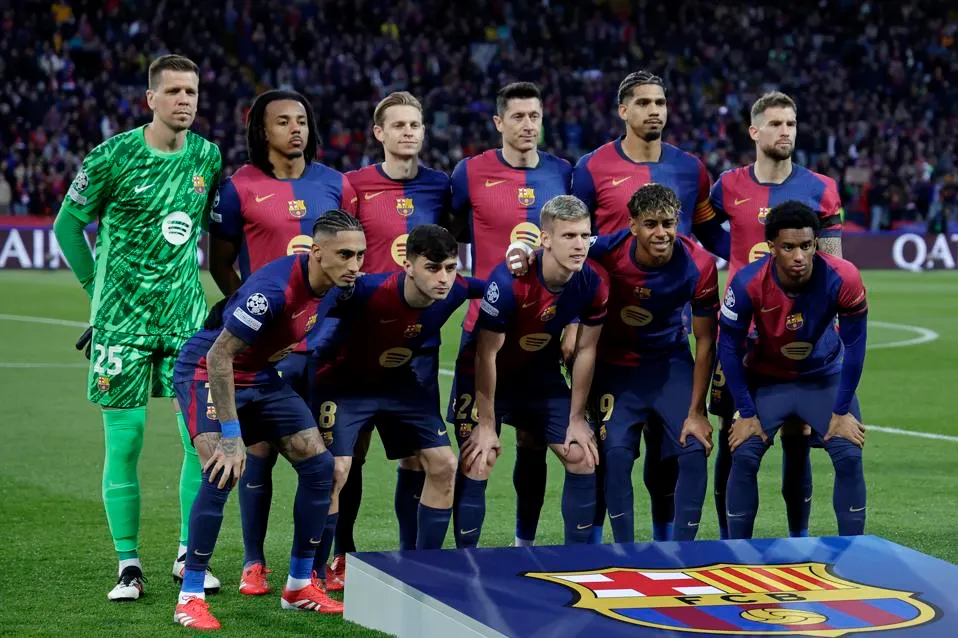

FC Barcelona line-up before a Champions League match.
1. Marc-Andre ter Stegen (GK)
2. Pau Cubarsi (DEF)
3. Alejandro Balde (DEF)
4. Ronald Araujo (DEF)
5. Inigo Martinez (DEF)
6. Pablo Gavi (MID)
7. Ferran Torres (FWD)
8. Pedri Gonzalez (MID)
9. Robert Lewandowski (FWD)
10. Ansu Fati (FWD)
11. Raphinha (FWD)
13. Inaki Pena (GK)
14. Pablo Torre (MID)
15. Andreas Christensen (DEF)
16. Fermin Lopez (MID)
17. Marc Casado (MID)
18. Pau Victor (FWD)
19. Lamine Yamal (FWD)
20. Dani Olmo (MID)
21. Frenkie de Jong (MID)
23. Jules Kounde (DEF)
24. Eric Garcia (DEF)
25. Wojciech Szczesny (GK)
Manager: Hansi Flick
Captains:
Here are the five first-team captains for the 2024/2025 season (in order): Marc Andre ter Stegen, Ronald Araujo,
Frenkie de Jong, Raphinha, Pedri Gonzalez.